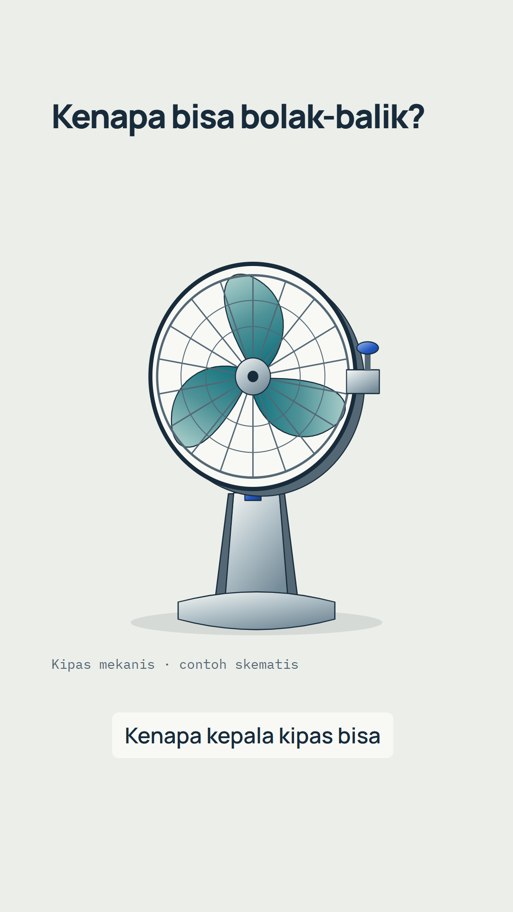
01: Kenapa bisa bolak-balik?
0.00–3.83s · measured
Baling-balingnya terus searah. Kenapa kepala kipas bisa bergerak bolak-balik?

Baling-balingnya terus searah. Kenapa kepala kipas bisa bergerak bolak-balik?
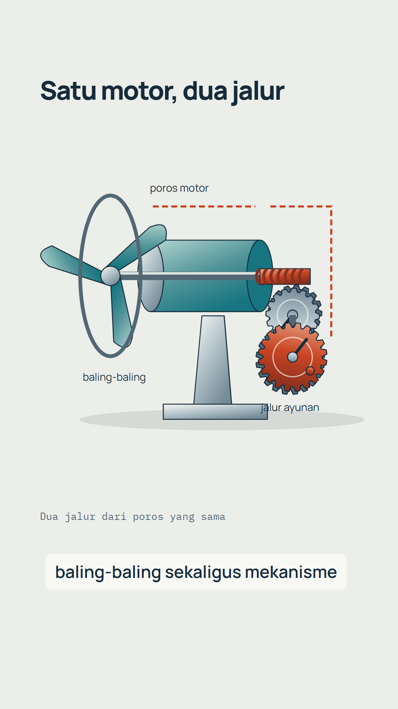
Pada tipe mekanis ini, satu motor menggerakkan baling-baling sekaligus mekanisme ayunan di belakangnya.
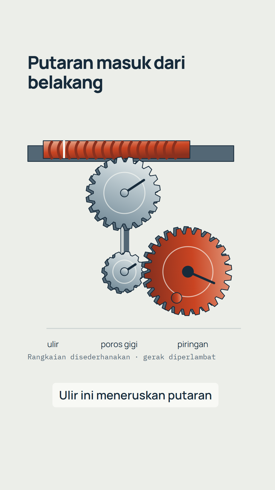
Bagian belakang poros berbentuk ulir. Ulir ini meneruskan putaran ke rangkaian roda gigi.
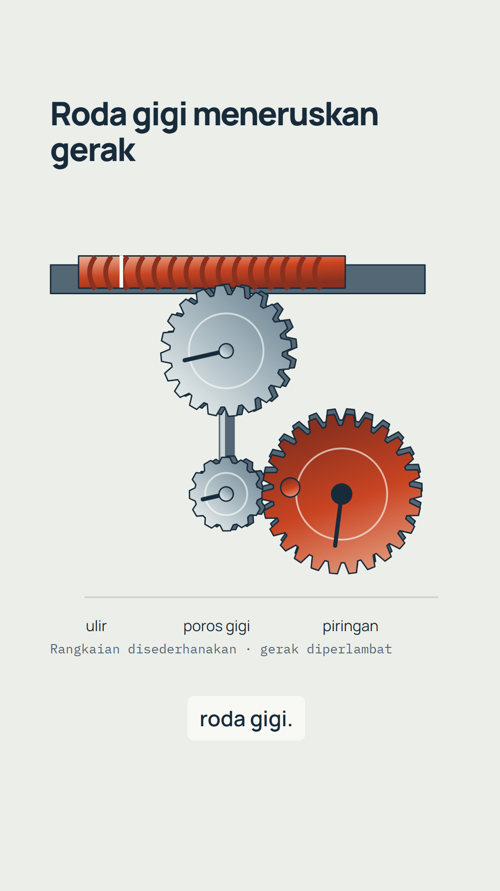
Rangkaian itu menggerakkan piringan di bawah rumah roda gigi. Piringan berputar bersama pin di tepinya.
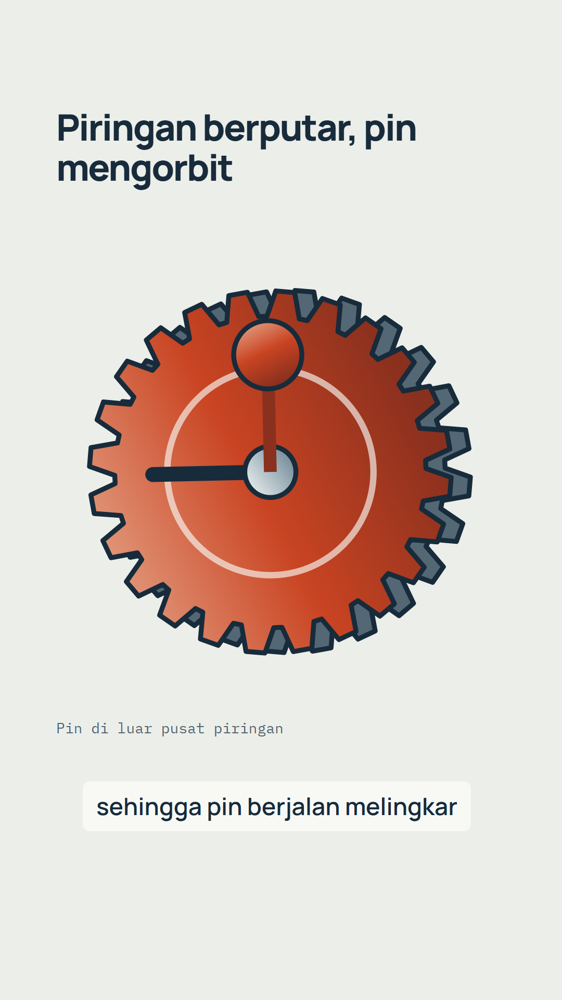
Perhatikan pin ini. Letaknya menjauh dari pusat, sehingga pin berjalan melingkar ketika piringan berputar.
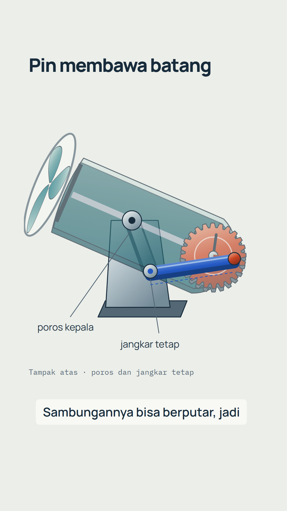
Pin tersambung ke batang penghubung. Sambungannya bisa berputar, jadi batang mengikuti perjalanan pin tanpa terlepas.
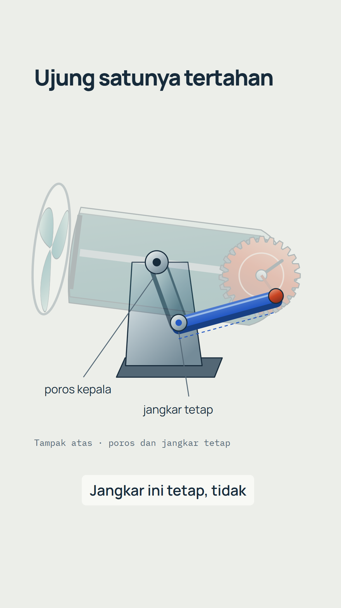
Ujung batang yang lain terpasang pada jangkar di penyangga. Jangkar ini tetap, tidak ikut kepala kipas.
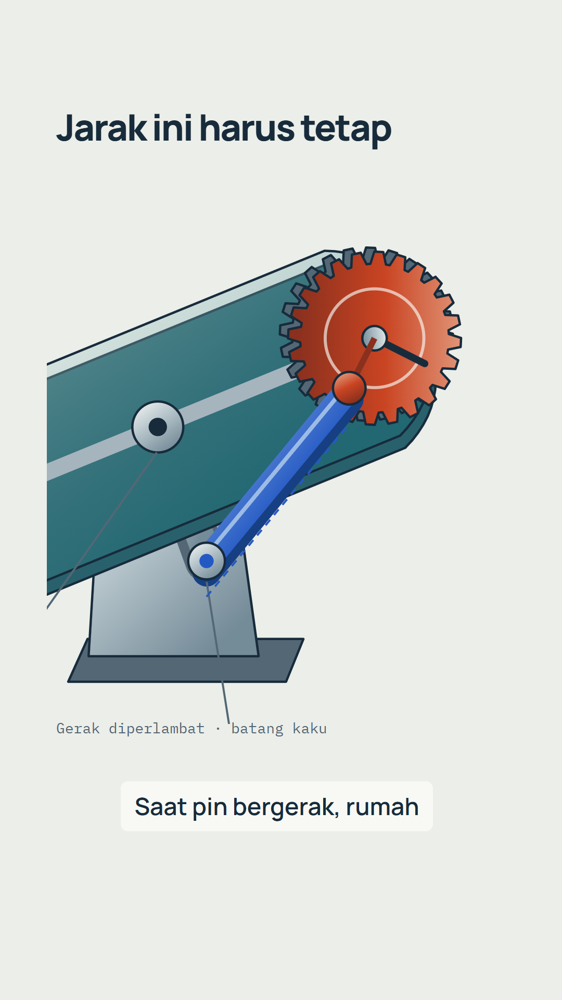
Inilah kuncinya. Batang tidak memanjang. Saat pin bergerak, rumah roda gigi harus bergeser mengelilingi poros kepala.
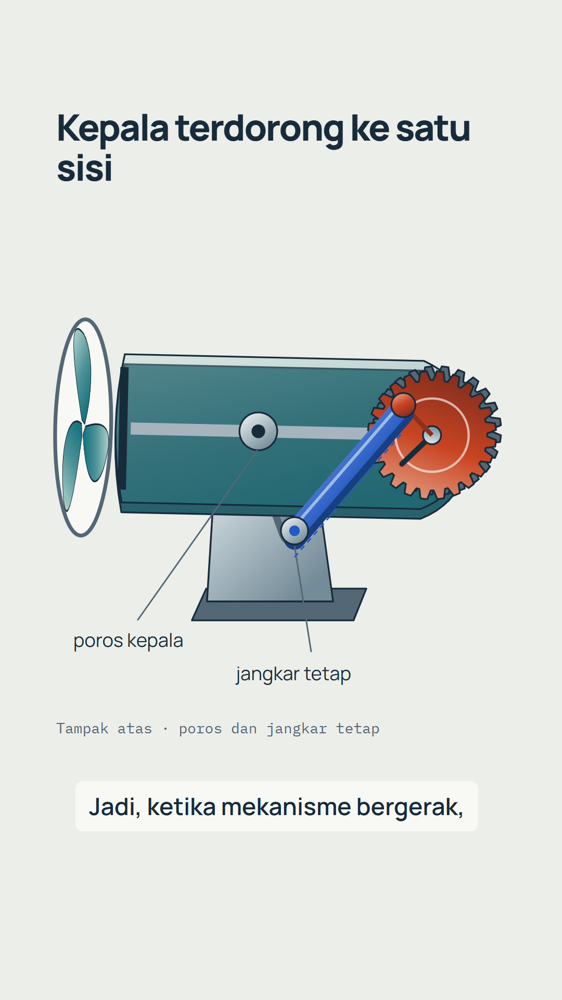
Rumah roda gigi terikat pada badan motor. Jadi, ketika mekanisme bergerak, seluruh kepala ikut berayun ke satu sisi.
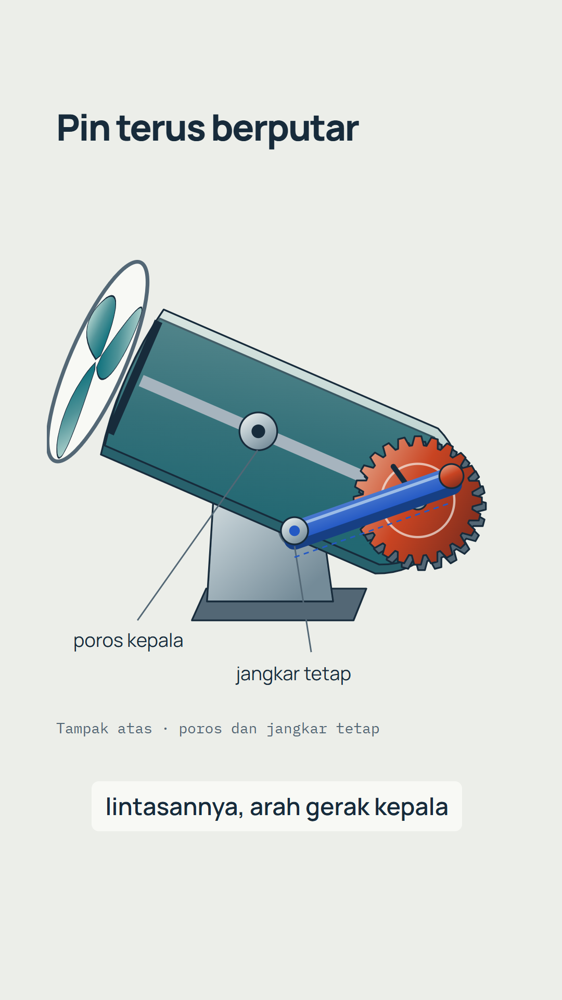
Pin terus mengitari piringan. Setelah melewati bagian lintasannya, arah gerak kepala berbalik, meskipun piringan tetap berputar searah.
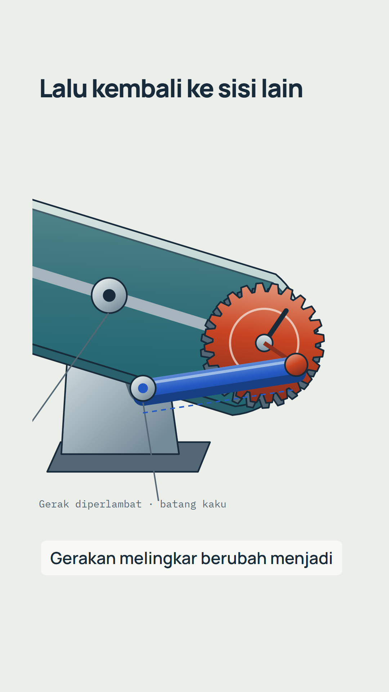
Batang kini membawa kepala ke sisi lain. Gerakan melingkar berubah menjadi ayunan melalui sambungan-sambungan ini.
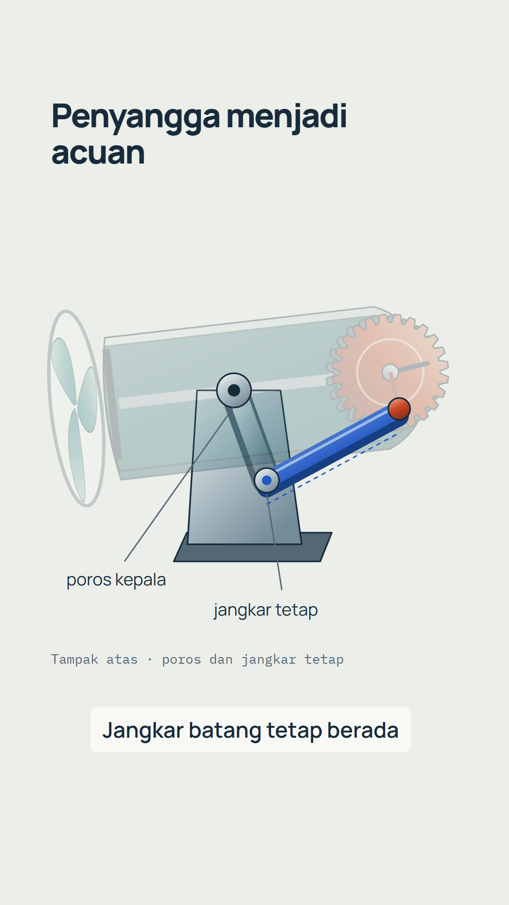
Poros di leher menopang kepala yang berayun. Jangkar batang tetap berada pada penyangga sebagai acuannya.
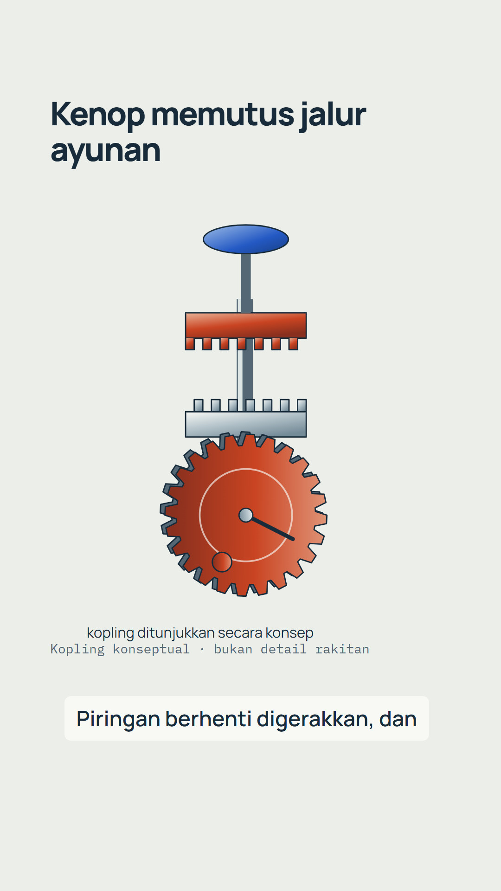
Pada tipe ini, kenop yang diangkat melepas kopling mekanisme ayunan. Piringan berhenti digerakkan, dan kepala mempertahankan arahnya.
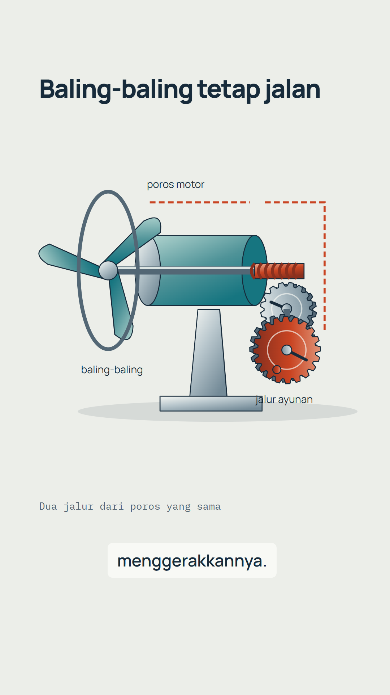
Baling-baling tetap berputar karena poros motor masih menggerakkannya. Yang dilepas hanya jalur menuju mekanisme ayunan.
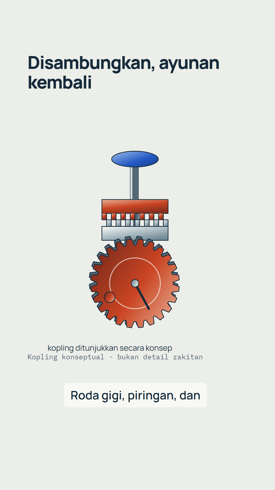
Ketika kenop ditekan, jalur ayunan tersambung lagi. Roda gigi, piringan, dan batang kembali bekerja bersama.
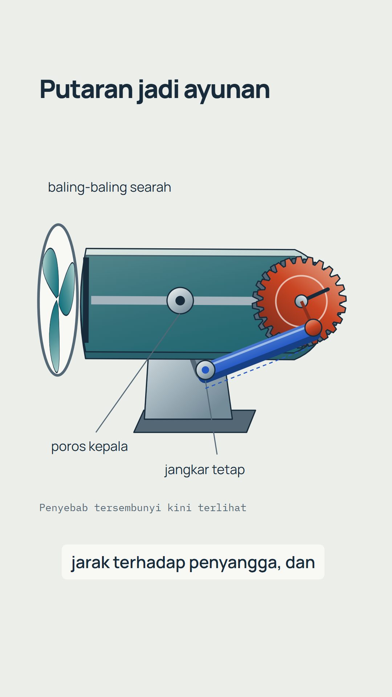
Jadi, motor tidak perlu bolak-balik. Pin berputar, batang menjaga jarak terhadap penyangga, dan kepala berayun. Itulah gerakan yang terlihat dari luar.